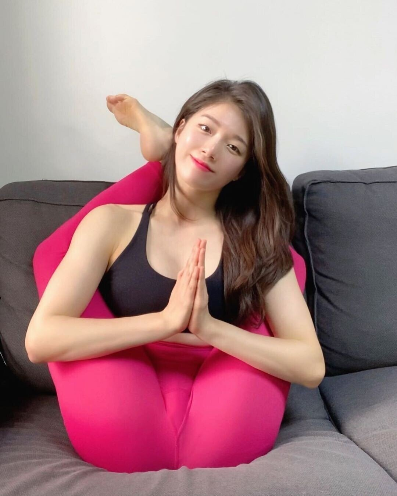

좀처럼 코로나19가 사그라지지 않고 있다. 국내 확진자 수가 연일 늘어나고 출처를 알 수 없는 소문들까지 더해져 불안감이 최고조에 달한다. ‘아무것도 만지지 마라’던 영화 〈컨테이젼〉을 상기시키는 상황이다. 하지만 부정적인 뉴스 한 편에 확진자 중 완치된 이들의 소식도 들린다. 전문가들은 “별다른 백신이나 치료제가 없는 가운데 퇴원 환자가 늘어나는 것은 몸의 면역체계 덕분”이라고 한다. 역시 예방도 치료도 면역력 키우기가 답이다. 마음까지 다독여주는 요가로 면역력 키우기에 나서보자.
틈틈이 스트레칭을 하는 등 작은 생활 습관만 바꿔도 면역력을 높일 수 있다.
면역력은 외부에서 들어오는 세균, 바이러스, 곰팡이 등의 다양한 병원체로부터 우리 몸을 지키는 방어 시스템이다. 면역력이 떨어지면 바이러스 질환에 감염될 확률이 높아지는 것은 당연하다. 현재 마땅한 치료제가 없는 코로나19에 대비해 면역력을 높이기 위한 컨디션 관리는 선택이 아닌 필수이다.
코로나19는 감염자의 침방울이 호흡기나 눈, 코, 입의 점막으로 침투해 전염되기 때문에 마스크 착용은 필수이며, 손을 깨끗이 씻는 것도 중요하다(비누거품을 내어 곧바로 씻으면 바이러스는 죽지 않는다. 손에 거품을 내고 최소한 30초 이상 문지른 후 씻어내야 하는데, ‘생일 축하합니다’ 노래 전곡을 두 번 부르는 시간과 일치한다). 이 두 가지는 요즘 귀가 따갑도록 듣는 내용이다. 좋은 습관이니 이참에 평생 지속해도 좋겠다. 몇 가지 더 추가하면 하루 7~8시간 충분한 수면 취하기, 따뜻한 물 많이 마시기, 비타민과 무기질이 많은 음식(귤, 오렌지, 사과, 배 등)을 적정량 섭취하기, 백혈구의 활동을 무력하게 만드는 술과 담배는 단호히 끊기 등이 있다. 새로울 것은 없다. 어릴 때 가정에서 또 유치원에서부터 수없이 들었던 것들이 아닌가. 건강한 삶을 위한 작은 습관들, 이제 진지하게 실천에 옮길 때이다.
여기에 하나 더하면 바로 운동이다. 하루 30분 이상의 운동으로 체력을 기르는 것은 면역력 향상의 지름길이다. 보통 우리 체온은 36.5~37.5도 사이를 유지할 때 건강하다고 한다. 여기서 체온이 1도라도 떨어지면 면역력이 30% 감소하고 반대로 1도만 올라가도 면역력이 5배 좋아진다고 한다. 그러니 운동을 통해 체온을 상승시키고 혈액순환을 촉진하는 것이 큰 도움이 된다.
특히 혈액순환 향상은 요가가 주는 가장 대표적인 효과이다. 요가에서 강조하는 호흡 덕분이다. 호흡에 집중해 요가를 하면 혈액에 충분한 산소 공급을 도와 백혈구 증진은 물론 B세포와 T세포가 활발하게 활동하게 한다. 백혈구는 몸속 구석구석을 살피며 돌아다니다가 몸 밖에서 들어온 적군을 발견하면 몰려들어 잡아먹는 역할을 한다. 이중 B세포와 T세포는 조금 더 똑똑한 면역 세포로서 한 번 잡아먹었던 병원체의 모양을 기억했다가 다음번에 똑같은 병원체를 만나면 더 빨리 적들을 물리친다. 바이러스 침투로 발병한 모든 병은 우리 몸의 면역력을 최상화 시켜 우리 몸속의 유전자 자체가 바이러스를 물리치게 하는 것이 최선의 예방법이고 치료법이다.
실제로도 요가를 시작한 이후 감기, 비염 등의 잔병치레가 줄었다는 이야기는 주변에서 빈번히 듣는다. 더욱이 요즘처럼 ‘아무것도 만지지 말고 누구도 만나지 않는 것’이 가장 안전한 시국이라면 실내에서 혼자 하는 요가도 시도해봄직하다.
코로나19로 불안감이 고조되고 국민 감성이 무겁게 가라앉아있는 지금 비자요가 김세윤 원장은 다음과 같이 조언한다. “면역력은 스트레스와도 밀접한 관계가 있답니다. 과한 긴장감은 면역력을 떨어뜨리는 요인이지요. 요가를 하면서 호흡하고 몸을 움직이는데 집중해 지금 이 시대에 흐르는 공통적인 불안감에서 빠져나오는 시간을 가져보세요. 부정적인 생각에 사로잡히지 않도록 많이 움직이면서 체온을 올리고 땀을 좀 내는 것도 좋고, 평소 해보지 않았던 자세에 도전도 해보고요. 물론 할 때는 불편하고 어려울 수 있지만 마쳤을 때는 오히려 ‘내가 왜 그런 걱정을 했지?’ 상쾌함을 맛볼 수 있답니다. 이런 과정을 통해 신진대사가 원활해지고 긴장이 해소되면서 면역력이 저절로 상승하는 효과를 볼 수 있어요.” 